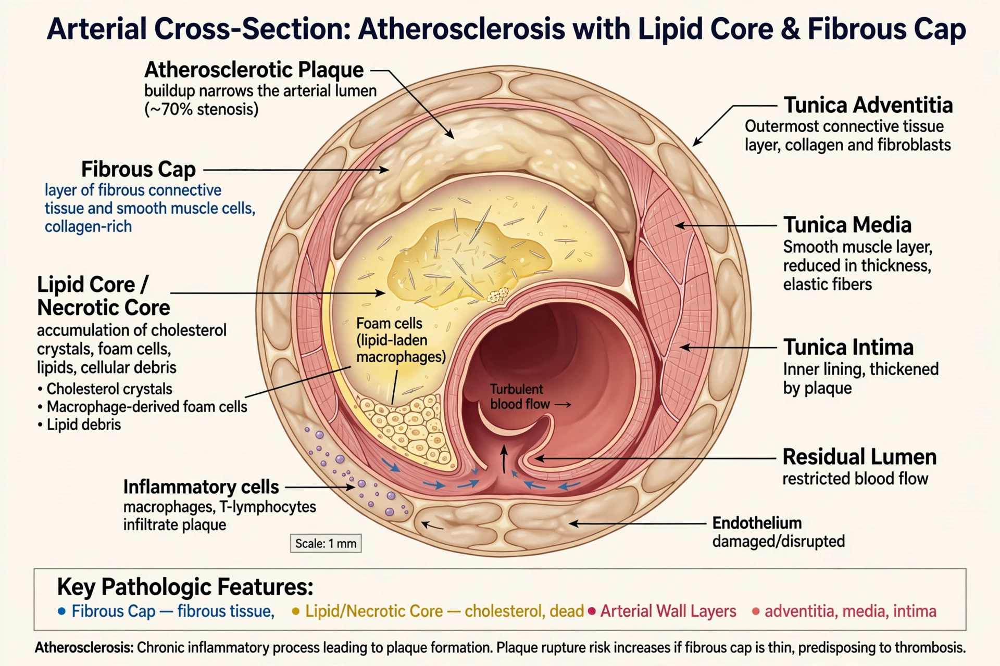

| Atherosclerosis | |
|---|---|
| Specialty | Cardiology, vascular medicine |
| Definition | Chronic inflammatory disease of arteries with plaque build-up in the intima |
| Risk factors | High LDL cholesterol, hypertension, smoking, diabetes, obesity, age, family history |
| Complications | Myocardial infarction, stroke, peripheral artery disease, aneurysm |
| Prevention / treatment | Lifestyle change, statins and other lipid-lowering drugs, antihypertensives, antiplatelet agents, revascularisation |

Atherosclerosis is a chronic, progressive disease in which the inner layer (intima) of arteries thickens with plaque — a build-up of cholesterol-rich lipids, inflammatory cells, smooth muscle cells, and fibrous tissue. Over decades plaques narrow the arterial lumen and stiffen the wall; their sudden rupture or erosion triggers clot formation (atherothrombosis), the immediate cause of most heart attacks and many strokes. Atherosclerotic cardiovascular disease is the leading cause of death worldwide. The name combines Greek athḗrē (gruel or paste, describing the soft lipid core) and sklḗrōsis (hardening). It is distinct from arteriosclerosis in general, which includes other forms of arterial stiffening.
The modern "response to injury" model begins with dysfunction of the endothelium — promoted by high blood pressure, tobacco smoke, and disturbed blood flow at branch points — allowing LDL particles to enter and become trapped in the intima, where they are oxidised and modified. Monocytes recruited to the site become macrophages that ingest the lipid, turning into foam cells; their accumulation forms the visible fatty streak, present even in adolescents. Smooth muscle cells migrate over the lesion to form a fibrous cap above a growing necrotic lipid core, producing the mature fibroatheroma. Plaques may calcify, grow outward (remodelling, preserving the lumen until late), or narrow the vessel causing exertional symptoms such as angina or intermittent claudication. Vulnerable plaques — thin-capped, inflamed, lipid-rich — are prone to rupture; when the cap breaks, blood contacts the thrombogenic core and a clot may abruptly occlude the artery.
Established risk factors include elevated LDL cholesterol and lipoprotein(a), hypertension, cigarette smoking, diabetes mellitus, obesity, physical inactivity, male sex, advancing age, and family history of premature disease; inherited severe hypercholesterolaemia (familial hypercholesterolaemia) causes heart attacks in youth. Mendelian randomisation studies confirm LDL as causal, not merely associated. Inflammation is an independent contributor: the CANTOS trial (2017) showed that the anti-inflammatory antibody canakinumab reduced cardiovascular events without lowering lipids, and low-dose colchicine has since gained approval for cardiovascular risk reduction.
Atherosclerosis is usually silent for decades. Manifestations depend on the territory: coronary disease (angina, myocardial infarction, sudden death), cerebrovascular disease (transient ischaemic attack, stroke, carotid stenosis), peripheral artery disease (claudication, critical limb ischaemia), renal artery stenosis, and mesenteric ischaemia. Plaque also weakens walls and contributes to abdominal aortic aneurysm. Detection uses risk scores, blood lipids, coronary calcium scanning, ultrasound, CT angiography, and stress testing.
Management targets risk factors: smoking cessation, a Mediterranean-style diet, exercise, and treatment of hypertension and diabetes. Statins are first-line lipid therapy, supplemented by ezetimibe and PCSK9 inhibitors for high-risk patients; aspirin and other antiplatelet drugs are used in established disease. Severe flow-limiting lesions are treated by angioplasty with stenting or by bypass surgery. Autopsy studies of accident victims show fatty streaks are nearly universal by early adulthood, but populations with low lifetime LDL and blood pressure — and trial evidence from lipid lowering — show the disease is substantially preventable and partly reversible.
Atherosclerosis has been identified in ancient Egyptian and other mummies, showing it is not purely a modern disease. Leonardo da Vinci described arterial thickening; the term was coined by Felix Marchand in 1904. Nikolai Anichkov's cholesterol-fed rabbits (1913) founded the lipid hypothesis, confirmed epidemiologically by the Framingham Heart Study and therapeutically by the statin trials of the 1990s.